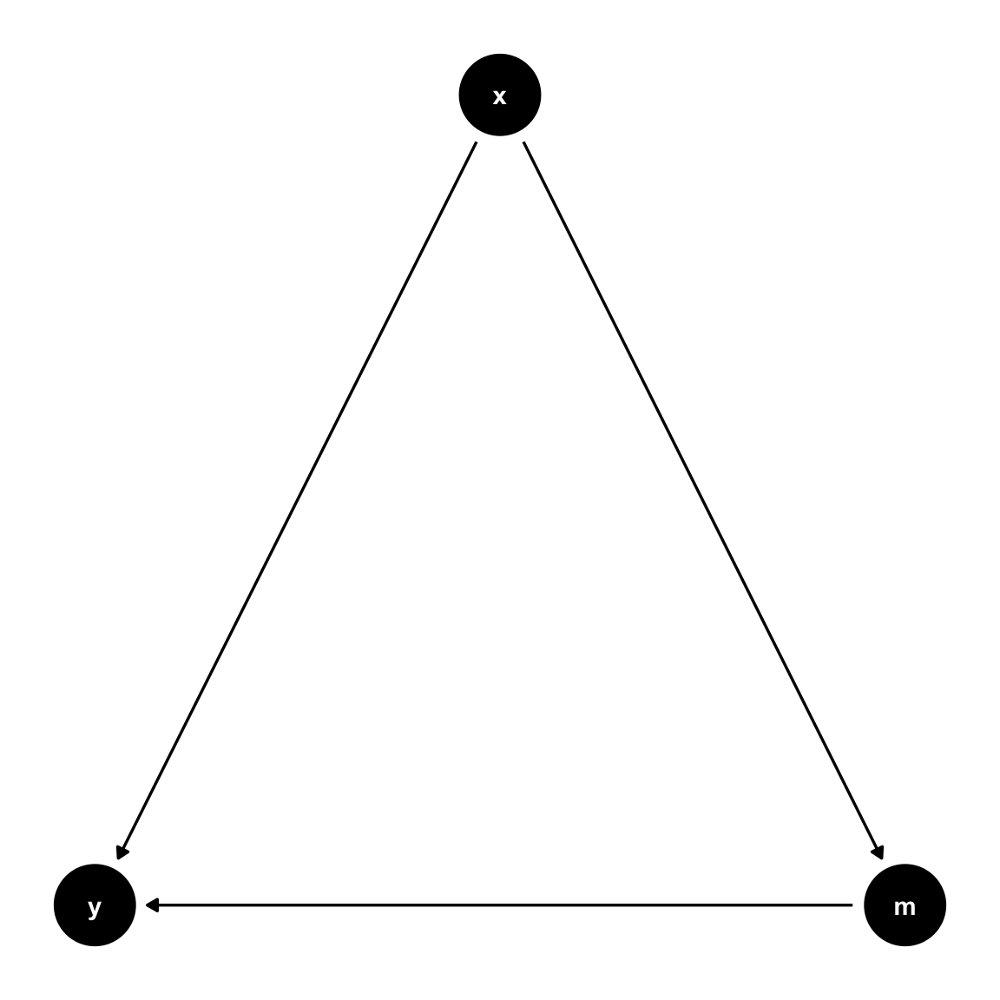
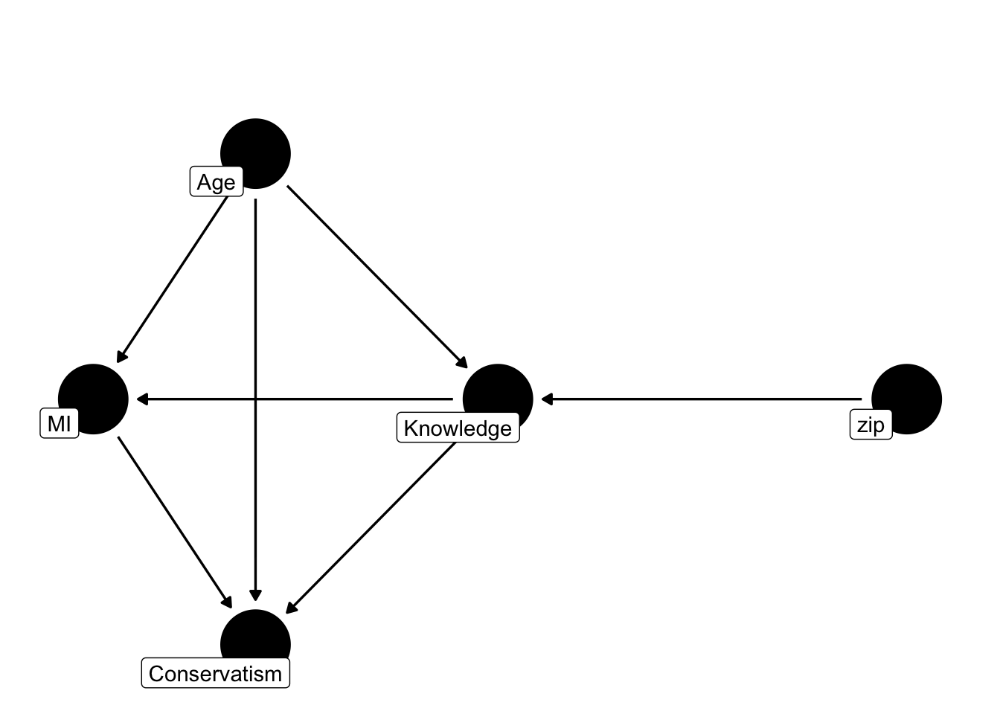

Much of the applied research conducted in political science attempts to make causal claims. Let’s call this, in a general sense, a “treatment effect.” Estimating a treatment effect is not solely restricted to experiments – though this is certaintly a reason to conduct an experiment – but can also be estimated with observational data. In many circumstances, we wish to know the consequence of an intervention. Think about the effect of a public policy change, or the influence of a drug, or the consequence of changing electoral laws on voter behavior.
Causal explanations involve a statement about how units are influenced by a particular treatment or intervention. It’s useful to think about the problem in terms of the : How would an individual respond to a treatment, compared to an identical circumstance where that individual did not receive the treatment (Morton and Williams 2010)? For this reason, the exercise involves inferences about unit effects, the individual, whehter that be a person, a state, a country, or some other unit of analysis.
Formally, we are interested in \(Y_{i,1}-Y_{i,0}\). What would the th respondent’s value of Y be in state 1 and state 0? For simplicity, let’s just call this the treatment, T, or the control, C. The difference \(\delta\), is just the difference in y across the two states, \(\delta_i=Y_{i,T}-Y_{i,C}\) (Morton and Williams 2010). Every unit has been exposed to the treatment and control. Another way of thinking about this is in terms of confounding – how is a relationship modified by a third variable? So, after controlling for every possible confound, how would the unit respond in these two states? This, is referred to as the the “Rubin Causal Model” (RCM), named after the influential statistician, Donald Rubin.
Notice, however, that this is largely a thought experiment. The counterfactual is unobservable. This is the . \(\delta_i\) is not attainable, because the potential outcome is never directly observed!
Instead we generally make assumptions about groups of individuals – or units – where some degree of control is exercised. That is, while the causal effect is not directly observable, we can make inferences about a causal effect, generating a causal estimand and then testing with a statistical estimate.
While we cannot calculate the treatment effect from the counterfactuals, the ATE could be approximated using the the expected difference in treatment and control conditions.
There is a rather lively debate in the causal inference traditions between Donald Rubin’s potential outcomes framework, and the Judea Pearl causal graph framework. The potential outcomes framework adopts an approach that largely focuses on the individual unit, and how the individual unit might respond in a counterfactual scenario. For instance, what would have happened if the unit was exposed to the treatment, and what would have happened if the unit was not exposed to the treatment. The causal graph framework is largely expressed in the language of DAGs – many of which we have explored – in which we can use a scientific and statistical models, along with the do operator to estimate causal effects. There are important differences in these traditions for sure, but I’ll generally move between the two.
9.1 Causal Estimands and the Do Operator
This is where another useful tool comes in – the do operator. The do operator is a way to denote that we are interested in the effect of \(X\) on \(Y\) when \(X\) is set to a particular value. Perhaps we wish to form an estimate of the causal effect of wealth on political conservatism. We could do this if we were able to exert control over wealth. For instance, if we as researchers were able to randomly assign people to a high or low wealth condition, we could then formulate an estimate of the causal effect of wealth on political conservatism, the difference between the two groups.
We obviously can’t do this, but we could use data to approximate such a scenario. Here’s how we’ll do it.
Imagine we have a large dataset, with a variable, wealth. Imagine two worlds; one where everyone has “high wealth” and one where everyone has “low wealth.” We can approximate these two worlds with our data: Create two versions of our data, the only difference being the wealth value.
Now, we might use this as as data, fed to the model. Then we perhaps just average the predicted score, political conservatism in two “worlds,” one where everyone is “high wealth” and the other where everyone is “low wealth.”
Use these data “worlds,” in conjunction with the statistical model to create predictions and causal estimates We just use these data to form predictions from the model. Then we perhaps just average the predicted score, political conservatism in two “worlds,” one where everyone is “high wealth” and the other where everyone is “low wealth.”
Manipulating the DAG in this way has a desirable consequence: it removes all arrows pointing to the variable of interest. Age no longer correlates with wealth, because it’s a constant within each data set. The same goes for education. We’ve effectively “blocked” all paths to wealth, except for the path we’re interested in – the relationship between wealth and conservatism.
Then we perhaps just average conservatism in these two “worlds,” one where everyone is “high wealth” and the other where everyone is “low wealth.” This is the causal estimand.
The 95% confidence interval is 0.2184448 to 0.3852349
The “fork” or “confound” should not be ignored. Doing so will lead to biased estimates. This is why we’re often encouraged to specify theoretically informed models, models that “control for” the effect of potential confounding variables.
9.2 Mediation, or the Pipe
dagify(m ~x , y~ m + x) %>%ggdag() +theme_dag()

This is a common problem in the social sciences; it forms the basis for mediation analysis. Notice that \(x\) can affect \(y\) in a couple ways. One is \(x\rightarrow m \rightarrow y\). Another is \(x \rightarrow y\). Both combine to form thte total effect of x on y. The total effect is the sum of the direct and indirect effects. The direct effect is the effect of x on y, controlling for the mediator. The indirect effect is the effect of x on y, through the mediator.
So, \(x\) influences \(y\) through two paths. The direct effect is the effect of \(x\) on \(y\), controlling for the mediator. The indirect effect is the effect of \(x\) on \(y\), through the mediator. The total effect can be thought of as the sum of the direct and indirect effects, and possibly their interaction.
But, the regression of \(y\) on \(x\) and \(m\) doesn’t give us the total effect. Statements like, \(x\) has an effect on \(y\) controlling for \(m\) – while not incorrect – are somewhat misleading, as they don’t really acknowledge that sometimes one independent variable has an effect on another independent variable, also related to the dependent variable.
But \(m\) isn’t a fork, it’s pipe (also a “chain”). If we include \(m\) in the model, we’re effectively blocking the path from \(x\) to \(y\) through \(m\).But if the indirect effect and direct effect form the total effect, can’t we just add them together? No, not really. The indirect effect is the effect of \(x\) on \(y\) through \(m\). The direct effect is the effect of \(x\) on \(y\), controlling for \(m\). The total effect is the sum of the direct and indirect effects. What is the indirect effect, it’s just the path from \(x\) to \(y\) through \(m\).
Think about it somewhat different. \(x\) influences \(y\) through two paths, and these are the means by which \(x\) influences \(y\). From our review of independence, if
\(X \perp Y | M\), then \(X\) and \(Y\) are independent conditional on \(M\). But
But absent \(M\) two independent variables will be correlated.
\(X \not\perp Y\)
How might we estimate the total effect? Don’t condition on \(M\). In this simple model, it’s entirely reasonable. That treatment effect should consist of both direct and indirect paths. Sometimes it’s easiest to see with data
library(dplyr)synthetic_data =data.frame( x <-rbinom(2000, 1, 0.45), m <-0.5* x +rnorm(2000, 0, 0.5), y <-0.05* x +0.1*m +rnorm(2000, 0, 0.5)) %>%setNames(c("x", "m", "y"))synthetic_data %>%head()
x m y
1 1 0.49185646 -0.27519818
2 0 0.31167200 0.08208649
3 0 -0.30839432 0.43378710
4 1 0.09862058 0.14948526
5 0 0.04833284 0.43521773
6 0 -0.06168167 -0.67009301
\(\bullet\) x is a binary variable, drawn from a binomial density with a probability of 0.45. \(\bullet\) m is a continuous variable, drawn from a normal density with a mean of \(0.5 \times x\) and a standard deviation of 0.5. \(\times\) y is a continuous variable, drawn from a normal density with a mean of \(0.05 \times x + 0.1 \times m\) and a standard deviation of 0.5.
Here’s the naive regression
library(dplyr)synthetic_data =data.frame( x <-rbinom(2000, 1, 0.45), m <-0.5* x +rnorm(2000, 0, 0.5), y <-0.05* x +0.1*m +rnorm(2000, 0, 0.5)) %>%setNames(c("x", "m", "y")) lm(y ~ x + m, data = synthetic_data) %>%summary()
Call:
lm(formula = y ~ x + m, data = synthetic_data)
Residuals:
Min 1Q Median 3Q Max
-1.7659 -0.3517 0.0076 0.3543 1.4942
Coefficients:
Estimate Std. Error t value Pr(>|t|)
(Intercept) 0.02516 0.01521 1.654 0.098193 .
x 0.01866 0.02524 0.739 0.459972
m 0.08634 0.02334 3.699 0.000222 ***
---
Signif. codes: 0 '***' 0.001 '**' 0.01 '*' 0.05 '.' 0.1 ' ' 1
Residual standard error: 0.5057 on 1997 degrees of freedom
Multiple R-squared: 0.01014, Adjusted R-squared: 0.00915
F-statistic: 10.23 on 2 and 1997 DF, p-value: 3.801e-05
Notice that it captures the direct effect of \(x\) on \(y\), but not the total effect, nor do we see the indirect effect, because this model conditions on \(m\), but it’s not a model predicting \(m\).
The total effect.
library(dplyr)synthetic_data =data.frame( x <-rbinom(2000, 1, 0.45), m <-0.5* x +rnorm(2000, 0, 0.5), y <-0.05* x +0.1*m +rnorm(2000, 0, 0.5)) %>%setNames(c("x", "m", "y")) lm(y ~ x , data = synthetic_data) %>%summary()
Call:
lm(formula = y ~ x, data = synthetic_data)
Residuals:
Min 1Q Median 3Q Max
-1.60885 -0.33315 0.00301 0.33240 1.72517
Coefficients:
Estimate Std. Error t value Pr(>|t|)
(Intercept) -0.01622 0.01533 -1.058 0.29
x 0.10661 0.02281 4.673 3.16e-06 ***
---
Signif. codes: 0 '***' 0.001 '**' 0.01 '*' 0.05 '.' 0.1 ' ' 1
Residual standard error: 0.5077 on 1998 degrees of freedom
Multiple R-squared: 0.01081, Adjusted R-squared: 0.01032
F-statistic: 21.84 on 1 and 1998 DF, p-value: 3.16e-06
This gives us the total effect, about 0.12. Notice that we never specified this. We only specified the paths. What is the indirect effect.
One approach, the product of the coefficients, aka, trace the paths.
lm(y ~ x , data = synthetic_data) %>%summary()
Call:
lm(formula = y ~ x, data = synthetic_data)
Residuals:
Min 1Q Median 3Q Max
-1.60885 -0.33315 0.00301 0.33240 1.72517
Coefficients:
Estimate Std. Error t value Pr(>|t|)
(Intercept) -0.01622 0.01533 -1.058 0.29
x 0.10661 0.02281 4.673 3.16e-06 ***
---
Signif. codes: 0 '***' 0.001 '**' 0.01 '*' 0.05 '.' 0.1 ' ' 1
Residual standard error: 0.5077 on 1998 degrees of freedom
Multiple R-squared: 0.01081, Adjusted R-squared: 0.01032
F-statistic: 21.84 on 1 and 1998 DF, p-value: 3.16e-06
lm(y ~ x + m , data = synthetic_data) %>%summary()
Call:
lm(formula = y ~ x + m, data = synthetic_data)
Residuals:
Min 1Q Median 3Q Max
-1.61406 -0.33394 0.01061 0.33178 1.69014
Coefficients:
Estimate Std. Error t value Pr(>|t|)
(Intercept) -0.01892 0.01524 -1.241 0.2147
x 0.05019 0.02519 1.993 0.0464 *
m 0.11836 0.02303 5.140 3.02e-07 ***
---
Signif. codes: 0 '***' 0.001 '**' 0.01 '*' 0.05 '.' 0.1 ' ' 1
Residual standard error: 0.5045 on 1997 degrees of freedom
Multiple R-squared: 0.02373, Adjusted R-squared: 0.02275
F-statistic: 24.27 on 2 and 1997 DF, p-value: 3.865e-11
lm(m ~ x , data = synthetic_data) %>%summary()
Call:
lm(formula = m ~ x, data = synthetic_data)
Residuals:
Min 1Q Median 3Q Max
-1.6779 -0.3234 0.0102 0.3142 1.6854
Coefficients:
Estimate Std. Error t value Pr(>|t|)
(Intercept) 0.02279 0.01480 1.54 0.124
x 0.47661 0.02202 21.64 <2e-16 ***
---
Signif. codes: 0 '***' 0.001 '**' 0.01 '*' 0.05 '.' 0.1 ' ' 1
Residual standard error: 0.4901 on 1998 degrees of freedom
Multiple R-squared: 0.1899, Adjusted R-squared: 0.1895
F-statistic: 468.5 on 1 and 1998 DF, p-value: < 2.2e-16
Notice that the indirect effect is the \(x\) coefficient from the \(m\) equation multiplied by the \(m\) coefficient from the \(y\) equation. It’s about 0.05. If the indirect effect is 0.05, and the total effect is 0.12, then the direct effect must be about 0.07, which it is.
If you wanted to know the total effect of \(x\) on \(y\), thinking that’s what you get by “controlling” for \(m\), think again. You’re only getting the direct effect.
This is precisely why we need to exert care when specifying a “theoretically informed” model. Theoretically informed doesn’t mean swamping the model with a bunch of variables, thinking that these are all confounds that require statistical adjustment. It doesn’t mean throwing every variable outlined in the literature into the regression model. It means thinking carefully about the relationships among all variables, not just in predicting \(y\).
9.3 Why Conditioning on Post-Treatment Variables is Problematic
A pipe means we may not be estimating the actual parameters of interest. Instead, we’re estimating a direct effect, and the final step in a more indirect sequence of events to \(y\). This means the researcher should exert care in interpreting the regression parameters. There’s another issue that empiricists often encounter, and that’s conditioning on post-treatment (probably observed) variables.
9.3.1 The Collider
Earlier in the course, I presented the issue with respect to campaign advertising.
In this example, political efficacy is an inverted fork, known as a collider. It’s a collider because there are two arrows leading into the political efficacy node, one is political knowledge, the other is negative advertising. Say we are interested in a mediation inspired analysis, where we’ll estimate the effect of negative advertising on voting through political efficacy, meaning we’ll estimate one model where we regress voting on negative advertising and political efficacy, and another where we regress political efficacy on negative advertising.
Isn’t this a useful way to sort out indirect and direct effects, consistent with what we just reviewed?
# Load necessary librarieslibrary(dagitty)library(ggdag)n <-2000X <-rbinom(n, 1, 0.45)Z <-rnorm(n, 0, 0.5)M <-0.5* X +0.5* Z +rnorm(n, 0, 0.5)Y <-0.05* X +0.5* M +0.5* Z +rnorm(n, 0, 0.5)# Create a data framedf <-data.frame(X = X, M = M, Y = Y, Z = Z)# Display the first few rows of the data framehead(df)
X M Y Z
1 0 0.21082410 1.0212399 1.0687942
2 0 -0.09183279 0.3881979 -0.5757142
3 0 0.23003259 0.5847306 1.0964707
4 0 0.35488006 0.6810748 0.2593340
5 1 1.54211169 1.5157154 0.4788373
6 1 0.11673563 -0.2300139 0.4275719
# But we don't actually observe Z, only Mlm(Y ~ X , data = df) %>%summary() # total effect
Call:
lm(formula = Y ~ X, data = df)
Residuals:
Min 1Q Median 3Q Max
-2.47072 -0.44963 -0.00021 0.46896 2.57434
Coefficients:
Estimate Std. Error t value Pr(>|t|)
(Intercept) 0.01553 0.02039 0.762 0.446
X 0.27539 0.03040 9.060 <2e-16 ***
---
Signif. codes: 0 '***' 0.001 '**' 0.01 '*' 0.05 '.' 0.1 ' ' 1
Residual standard error: 0.6763 on 1998 degrees of freedom
Multiple R-squared: 0.03946, Adjusted R-squared: 0.03898
F-statistic: 82.09 on 1 and 1998 DF, p-value: < 2.2e-16
lm(Y ~ X + M , data = df) %>%summary() # ??
Call:
lm(formula = Y ~ X + M, data = df)
Residuals:
Min 1Q Median 3Q Max
-1.96396 -0.38543 0.01809 0.37623 2.28007
Coefficients:
Estimate Std. Error t value Pr(>|t|)
(Intercept) 0.01436 0.01645 0.873 0.38271
X -0.08304 0.02685 -3.093 0.00201 **
M 0.71830 0.02193 32.761 < 2e-16 ***
---
Signif. codes: 0 '***' 0.001 '**' 0.01 '*' 0.05 '.' 0.1 ' ' 1
Residual standard error: 0.5455 on 1997 degrees of freedom
Multiple R-squared: 0.3752, Adjusted R-squared: 0.3746
F-statistic: 599.7 on 2 and 1997 DF, p-value: < 2.2e-16
The coefficient for both coefficients are quite a bit off. The reason is that we conditioned on something – \(m\) – that is related to both the outcome and something unobserved, \(Z\). Our estimates are wrong, they are biased.
This is often called post-treatment bias, and means more precisely that we’re conditioning on a collider variable. Because \(m\), the mediator, is often observed (not manipulated directly), it may share paths to the outcome \(y\) through variables we don’t observe in our data. This is a serious problem, as nothing in the model will be accurately estimated.
library(ggdag)dag <-dagify( conservatism ~ moral_individualism + age + college, moral_individualism ~ age + college, college ~ age + geography,labels =c("moral_individualism"="MI","college"="Knowledge","age"="Age","conservatism"="Conservatism","geography"="zip" ))ggdag(dag, text =FALSE, use_labels ="label") +geom_dag_text(aes(label = label), alpha =0.01, nudge_y =0.2) +# Adjust alpha for transparencytheme_dag()

9.4 What is the Effect of Age?
Do we control for moral individualism, or not? It’s clearly a mediator, but it’s also a collider. It’s influenced by political knowledge (in our data, college education), and we’re probably correct in placing other arrows leading to college education, like one’s geography. After all, in the United States, it’s well established that a variety of outcomes are influenced by the zipcode in which one grew up.
And in this gnarled mess – but still a gross simplification of reality – so how do we piece together a treatment effect for age, or knowledge.
9.4.1 What is the effect of knowledge (or education)
Graphs like these may seem hard to determine what to include in your model. Generally, if you’re interested in the effect of one variable, don’t condition on a collider. This is apparent when we want to estimate the effects of age on conservativism, versus the effect of knowledge on conservativism.
What model would estimate to determine the effect of age on conservatism?
This is still just age, and only age. The remaining variables are problematic, if we want to estimate the effect of age on conservatism.
What model would we estimate to determine the effect of knowledge on conservatism?
This question is more complicated, because if our interest is in knowledge, we would want to control for age. In this model, age is necessary because it’s a confounder.
In \(\texttt{dagitty}\), we can use the \(\texttt{adjustmentSets()}\) function to determine the appropriate adjustment sets for a given model.
Say our interest is then in piecing together the effect of college education and age on conservatism. Let’s estimate our models, then we’ll use the do operator to estimate the causal effect of age on conservatism, and the causal effect of college education on conservatism, again assuming the drawn diagram is correct.
\[y_{conservatism} = \gamma_0 + \gamma_1 x_{age} + \gamma_2 x_{college} + \epsilon\] Now, let’s use both models, simulating worlds where everyone is the same age, and everyone has the same level of education.
To estimate the causal effect of age on conservatism, we could use the do-operator, setting age to a constant value, and observing it’s effect on conservatism. We would then compare these datasets – worlds – in which age is a constant value.
To estimate the causal effect of college education on conservatism, we could use the do-operator, setting college education to a constant value, but letting age correspond to the age in the data. So, we might have one dataset where everyone in our data including age has a college education, and another where everyone in our data including age does not have a college education. We would then compare these datasets – worlds – in which college education is a constant value.
It’s common in these situations to then use the boostrap, repeatedly drawing from sample dataframe – treating it as if it’s a population – and then estimating these causal effects at each iteration. This allows us to simulate uncertainty in our estimates.
Returning to the cross-sectional data.
library(brms)
Loading required package: Rcpp
Loading 'brms' package (version 2.23.0). Useful instructions
can be found by typing help('brms'). A more detailed introduction
to the package is available through vignette('brms_overview').
Attaching package: 'brms'
The following object is masked from 'package:stats':
ar
load(here::here("shared/data/dataActive.rda"))dataActive %>%mutate(conservative =ifelse(ideo5 =="Very conservative"| ideo5 =="Conservative", 1, 0)) %>%# `college` is a two-year degree or higher, matching the coding in the full# WSS 2020 instrument (educ x college there is exactly this split).mutate(college =ifelse(educ %in%c("2-year", "4-year", "Post-grad"), 1, 0)) -> dat# Estimate the effect of age on conservatismmodel_age <-glm(conservative ~ age, data = dat, family =binomial("logit"))model_education <-glm(conservative ~ college + age, data = dat, family =binomial("logit"))# the effect of going from 20 to 80; datYoung <- dat %>%# replace all in age with 20mutate(age =20) predYoung =predict(model_age, newdata = datYoung, type ="response") datOld <- dat %>%# replace all in age with 80mutate(age =80) predOld =predict(model_age, newdata = datOld, type ="response")cat("The effect of going from 20 to 80 years old leads to ",round( predOld %>%mean() - predYoung %>%mean(),2)*100, "percentage point increase in identifying as conservative\n")
The effect of going from 20 to 80 years old leads to 38 percentage point increase in identifying as conservative
load(here::here("shared/data/dataActive.rda"))# the effect of going from 20 to 80; datCollege <- dat %>%# replace all in age with 20mutate(college =1) %>%# redundant, but just to be clearmutate(age = age)predCollege =predict(model_education, newdata = datCollege, type ="response") datNocollege <- dat %>%# replace all in age with 20mutate(college =0) %>%# redundant, but just to be clearmutate(age = age)predNone =predict(model_age, newdata = datNocollege, type ="response")cat("The effect of going from no college to college years old leads to ",abs(round( predCollege %>%mean() - predNone %>%mean(),2)*100), "percentage point decrease in identifying as conservative\n")
The effect of going from no college to college years old leads to 2 percentage point decrease in identifying as conservative
We could also use the bootstrap to estimate the uncertainty in these estimates. We would add this to the interior of the function, sampling applying the function to the sample, and then returning the estimate.
We can think of these “worlds” as just different counterfactuals – circumstances where everything is identical, except for the variable of interest. The difference between these data worlds is the is the causal estimand.
Manipulating the DAG in this way has a desirable consequence: it removes all arrows pointing to the variable of interest. College education no longer correlates with age, because it’s a constant within each data set. The same goes for age. We’ve effectively “blocked” all paths.
However, this still isn’t the effect of aging – it could be, but it also might be generational cohort differences. As a group, perhaps baby-boomers don’t differ all that drastically, but the difference between baby-boomers and millennials perhaps is quite large. It’s perhaps not an effect of aging, as much as growing up in a different historical context.